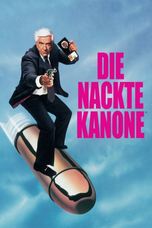

#1442 Die Nackte Kanone 1
Alternativ: The Naked Gun: From the Files of Police Squad!
 
 IMDB-Wertung: 7.6 / 10
IMDB-Wertung: 7.6 / 10  Metascore: 76
Metascore: 76 
Ihre Majestät Elizabeth II. von England will die Stadt Los Angeles mit einem Besuch beglücken. Da kommt es natürlich einer Katastrophe gleich, wenn ausgerechnet der Vorsitzende des Empfangskomitees verdächtig wird, ein Rauschgifthändler und Killer zu sein. Ein solch heikler Fall verlangt einfach nach Leutnant Frank Drebin vom L.A. Police Squad. Temperamentvoll stürzt er sich in die Ermittlungen und hinterlässt dabei ein breites Band von Chaos und Verwüstung...
Jahr: 1988
Dauer: 85 Minuten
FSK: 12
Land: USA Studio: Paramount A Gulf+Western CompanyTonspuren: DD2.0 - ,
Untertitel: Deutsch,
Auflösung: 1080p (1920x1080) Größe: 6707 MB
Genre: Komödie, Krimi
Regisseur: David Zucker
Drehbuch: Jerry Zucker, Jim Abrahams, David Zucker, Pat Proft, Jim Abrahams
Soundtrack: Ira Newborn
Darsteller:
 Leslie Nielsen als Frank Drebin
Leslie Nielsen als Frank Drebin- Priscilla Presley als Jane Spencer
 Ricardo Montalban als Vincent Ludwig
Ricardo Montalban als Vincent Ludwig George Kennedy als Ed Hocken
George Kennedy als Ed Hocken O.J. Simpson als Nordberg
O.J. Simpson als Nordberg- Susan Beaubian als Mrs. Nordberg
- Nancy Marchand als Mayor
 Tiny Ron als Al
Tiny Ron als Al 'Weird Al' Yankovic als 'Weird Al'
'Weird Al' Yankovic als 'Weird Al' Joe Grifasi als Foreman
Joe Grifasi als Foreman Nicholas Worth als Thug #1
Nicholas Worth als Thug #1 Ronald G. Joseph als Thug #27
Ronald G. Joseph als Thug #27 Tom Dugan als Drug Dealer #2
Tom Dugan als Drug Dealer #2- Reggie Jackson als Angel Right Fielder
 Lawrence Tierney als Angel Manager
Lawrence Tierney als Angel Manager- Dick Vitale als The Baseball Announcer
- Dick Enberg als The Baseball Announcer
- Joyce Brothers als The Basebell Announcer
- Mark Holton als Spectator - 'It's Enrico Pallazzo!'
 John Houseman als Driving Instructor , uncredited
John Houseman als Driving Instructor , uncredited Conrad E. Palmisano als Hijacked Taurus Driver , uncredited
Conrad E. Palmisano als Hijacked Taurus Driver , uncredited Brinke Stevens als Brunette Woman in Showers , uncredited
Brinke Stevens als Brunette Woman in Showers , uncredited- Sydney Urshan als Man Pushing Nordberg's Wheelchair , uncredited
 Robert K. Weiss als Park Hot Dog Vendor , uncredited
Robert K. Weiss als Park Hot Dog Vendor , uncredited Raye Birk als Pahpshmir
Raye Birk als Pahpshmir- Jeannette Charles als Queen Elizabeth II
- Ed Williams als Ted Olsen
- Leslie Maier als 'Weird Leslie'
- Winifred Freedman als Stephie
- Tony Brafa als Enrico Pallazzo
- Lorali Hart als Woman On Ledge
- Doris Hess als Nurse #2
- Charlotte Zucker als Dominique
- Larry Pines als Drug Dealer #1
- Burton Zucker als Photographer
- David Katz als Arafat
- Robert LuJane als Khadafi
- Charles Gherardi als Khomeini
- Prince Hughes als Idi Amin
- David Lloyd Austin als Gorbachev
- Ken Minyard als Ken &
 Robert Arthur als Bob
Robert Arthur als Bob- Greg Breslau als Man Deleted from Fireworks Scene
- Sharon Breslau als Woman Deleted from Fireworks Scene
- Michael J. Montes als Angel Shortstop
- Charles Fick als Angel Catcher
 Hank Robinson als First Base Umpire
Hank Robinson als First Base Umpire- Joe West als Third Base Umpire
- Jay Johnstone als Seattle First Up
- Randy Harvey als Seattle Pitcher
Datei: X:\3-Trilogie(N-Z)\Nackte Kanone\Nackte Kanone 1, Die (1988, FSK12, 1920x1080).mkv seit 06.07.2015
Festplatte: HD Collection-3(N-Z)-6(A-Z)
 Alle Filme aus Gruppe '3-Trilogie(N-Z)\Nackte Kanone'
Alle Filme aus Gruppe '3-Trilogie(N-Z)\Nackte Kanone'